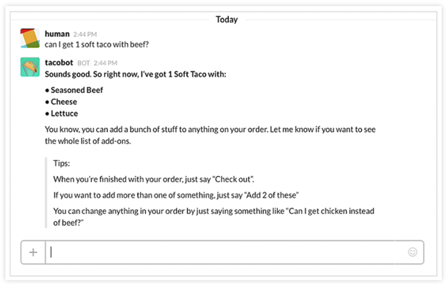
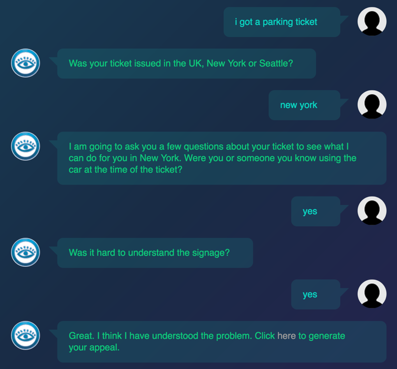
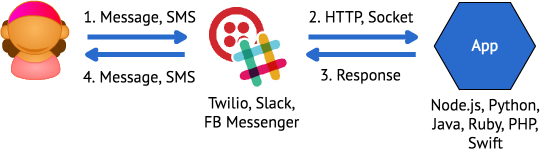
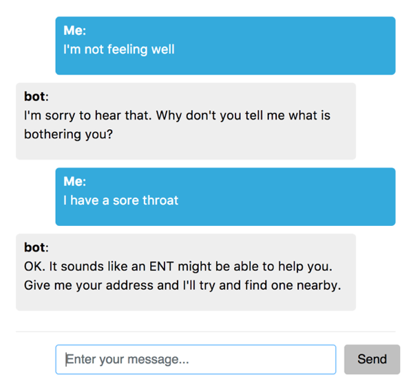

@markwatsonatx
Chatbots with Node.js and Watson Conversation
Bluemix/DSX Account: http://www.bluemix.com
Node.js: https://nodejs.org
Visual Studio Code: https://code.visualstudio.com/
git clone https://github.com/ibm-cds-labs/cbf-chatbot-workshop
What is a chatbot?
- An application or service that users interact with through the exchange of messages
- Conversational
- Typically built on top of a messaging platform
- Little or no user interface development required
Examples
Order Tacos
Appeal your parking ticket
Bot Platforms
Facebook Messenger
Kik
Skype
Slack
Twilio
Bot Frameworks
Microsoft Bot Framework
Botkit
Smooch.io
Conversational/Natural Language Processing Platforms
api.ai (Google)
wit.ai (Facebook)
Watson Conversation
Basic Bot Architecture
Add Data Services & APIs

Add NLP/Conversation

What are we building?

Health Bot Architecture
Watson Conversation
Watson Conversation combines a number of cognitive techniques to help you build and train a bot - defining intents and entities and crafting dialog to simulate conversation.
Watson Conversation Concepts
Intents
Entities
Dialog
Context
Intents
Entities
System Entities
Dialogs
Context
Passed between Watson Conversation and application
Keeps track of current dialog in the conversation
Context

Let's Build a Conversation
git clone
https://github.com/ibm-cds-labs/cbf-chatbot-workshop